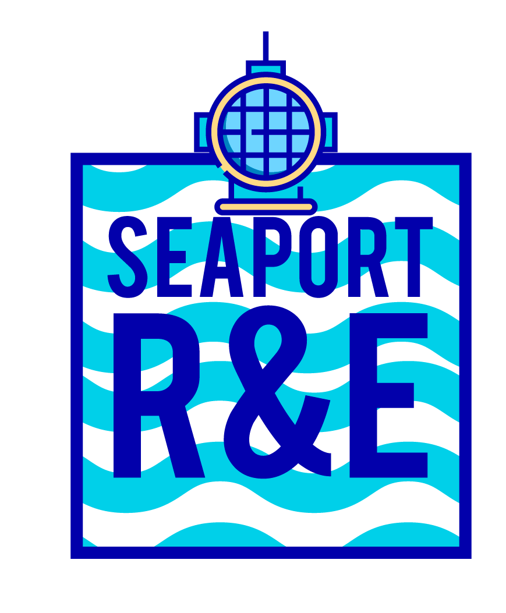

<div class="bg">
    <div class="cabecera">
        <nav class="navbar navbar-expand-lg navbar-dark bg-transparent pt-2">
            <div class="container-fluid">
            <a class="navbar-brand" href="#">
                <div class="bg-light d-inline-block mr-2" style="border-radius: 10px">
                    
                </div>
                SeaPORT R&E
            </a>
            <button class="navbar-toggler" type="button" data-toggle="collapse" data-target="#navbarNav"
                aria-controls="navbarNav" aria-expanded="false" aria-label="Toggle navigation">
                <span class="navbar-toggler-icon"></span>
            </button>
            <div class="collapse navbar-collapse" id="navbarNav">
                <ul class="navbar-nav ml-auto">
                    <li class="nav-item active">
                        <a class="nav-link" routerLink="/login">Analista</a>
                    </li>
                    <li class="nav-item active">
                        <a class="nav-link" routerLink="/login">Seleccionador</a>
                    </li>
                    <li class="nav-item active">
                        <a class="nav-link" routerLink="/login">Visualizador</a>
                    </li>
                </ul>
            </div>
        </div>
        </nav>
        <div class="text-light container-fluid mt-5 pl-5 informacion" style="width: 500px; float: left;">
            <h2 class="pb-3" style="border-bottom: 1px solid #aaa">¿Que es SeaPORT?</h2>
            <h5>SeaPORT es una aplicación web para la administración y delegación de servicios en las sociedades portuarias, aunque este programa pechera ya valio :v</h5>
        </div>
    </div>
</div>